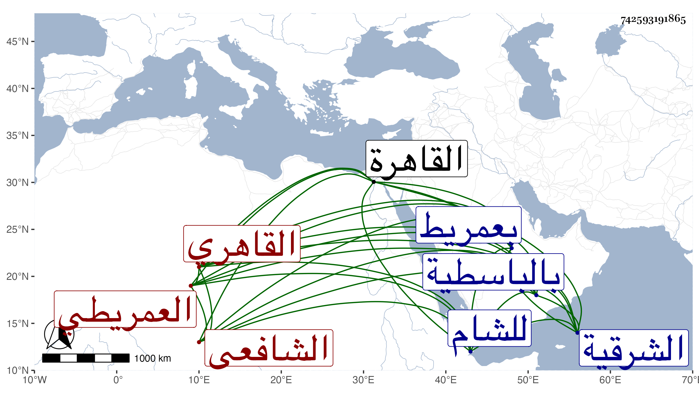

0902Sakhawi.DawLamic.ITO20230111-ara1.EIS1600.742593191865
Biography ID: 742593191865
339
محمد بن إسماعيل بن عمر بن مزروع الشمس العمريطي ثم القاهري الشافعي أخو خليل الماضي وابن أخي الشيخ رمضان تلميذ إبراهيم الأدكاوي . ولد بعد العشرين وثمانمائة بعمريط من الشرقية وتحول منها وهو صغير لعمه المذكور فسافر به إلى ادكو فأقام بها حتى حفظه القرآن ولقنه شيخه المشار إليه الذكر ولحظه وعادت بركته عليه فحفظ المنهاج والألفية وغيرهما ، وعرض على جماعة وتزوج بابنة عمه وأخذ القراءات عن بعض القراء بل لازم الاشتغال حتى برع في الفقه والعربية وشارك في الفضائل ومن شيوخه في العربية الشهاب الحناوي . وفي الفقه الشمس الونائي والشرف المناوي وبواسطة انتمائه للشيخ ابن مصباح كان ابن أخته الزين عبد الرحيم الأبناسي يقرأ عليه في القرآن وغيره وهو صغير ، وسمع على شيخنا وغيره بل قرأ على العلم البلقيني البخاري وغيره ، واختص بالبدر أبي السعادات البلقيني ثم بالولوي بن تقى الدين وقرأ عليهما في الفقه والحديث وغير ذلك ، وناب عن ثانيهما في خزن الكتب بالباسطية وفي القضاء بجزيرة الفيل والمنية وشبرا ، بل ناب في القاهرة عن العلمي وغيره وكتب بخطه الكثير ، وكان مديما للتحصيل مع الديانة والتحري والاحتمال والسكون والأوصاف الجميلة ، سافر مع الولوي المشار إليه حين توجهه للشام قاضيا على نقابته مرغوما فلم يلبث بعد ددخولها إلا يسيرا . ومات في ذي القعدة ظنا سنة أربع وستين في حياة أبويه ففجعا به رحمه الله وإيانا .
